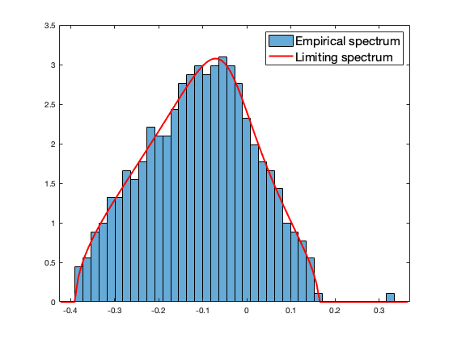
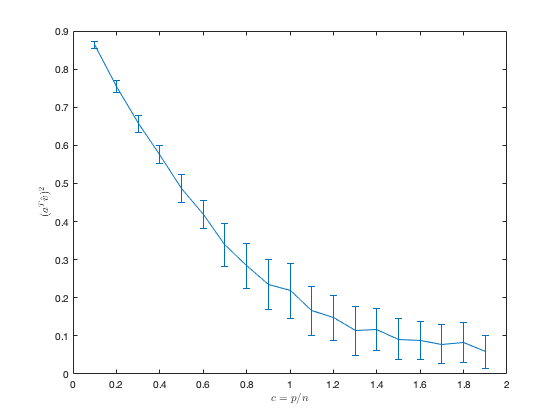

Section 6.4: Practical Lecture Material 6
This page contains simulations of Practical Lecture Material 6: Phase retrieval
Contents
Spectra of  versus the limiting law
versus the limiting law
close all; clear; clc coeff = 2; p = 250*coeff; n = 1500*coeff; c = p/n; % processing/truncating function %f = @(t) t; f = @(t) (max(t,0)-1)./(max(t,0)+sqrt(2/c)-1); value_posit = 100; alpha = [zeros(value_posit-1,1); 1; zeros(p-value_posit,1)]; %%% vector to recover alpha = alpha/norm(alpha); X = randn(p,n); v = X'*alpha; y = v.^2; fD = diag(f(y)); eigs_fD = diag(fD); %chi_s = @(t) exp(-t/2)./sqrt(t)/sqrt(2)/gamma(1/2); H = X*fD*(X')/n; eigs_H = eig(H); if min(eigs_H)<0 edges = linspace(min(eigs_H)*1.1, max(eigs_H)*1.1, 100); else edges = linspace(min(eigs_H)*0.9, max(eigs_H)*1.1, 100); end clear i % make sure i stands for the imaginary unit y = 1e-5; zs = edges+y*1i; dens = zeros(length(zs),1); m=1; for j=1:length(zs) z = zs(j); m_tmp=-1; while abs(m-m_tmp)>1e-6 m_tmp=m; m = 1/( -z + mean(eigs_fD./(1+c*m*eigs_fD))); end dens(j)=imag(m)/pi; end figure histogram(eigs_H, 40, 'Normalization', 'pdf'); hold on; plot(edges,dens,'r', 'Linewidth',2); legend('Empirical spectrum', 'Limiting spectrum', 'FontSize', 15)
phase transition behavior of the top eigenvalue-eigenvector pair
close all; clear; clc coeff = 1; p = 500*coeff; c_loop = 0.1:0.1:1.9; n_loop = p./c_loop; alpha = [-ones(p/2,1); ones(p/2,1)]; alpha = alpha/norm(alpha); nb_average_loop = 50; store_align = zeros(length(n_loop), nb_average_loop); for n_index = 1:length(n_loop) n = floor(n_loop(n_index)); c = p/n; % processing/truncating function %f = @(t) t; f = @(t) (max(t,0)-1)./(max(t,0)+sqrt(2/c)-1); for average_loop = 1:nb_average_loop X = randn(p,n); v = X'*alpha; y = v.^2; fD = diag(f(y)); eigs_fD = diag(fD); H = X*fD*(X')/n; [hat_v,~] = eigs(H,1,'largestreal'); store_align(n_index, average_loop) = (alpha'*hat_v)^2; end end figure errorbar(c_loop, mean(store_align,2), std(store_align,1,2)) xlabel('$c= p/n$', 'Interpreter', 'latex') ylabel('($a^T \hat v)^2$', 'Interpreter', 'latex')